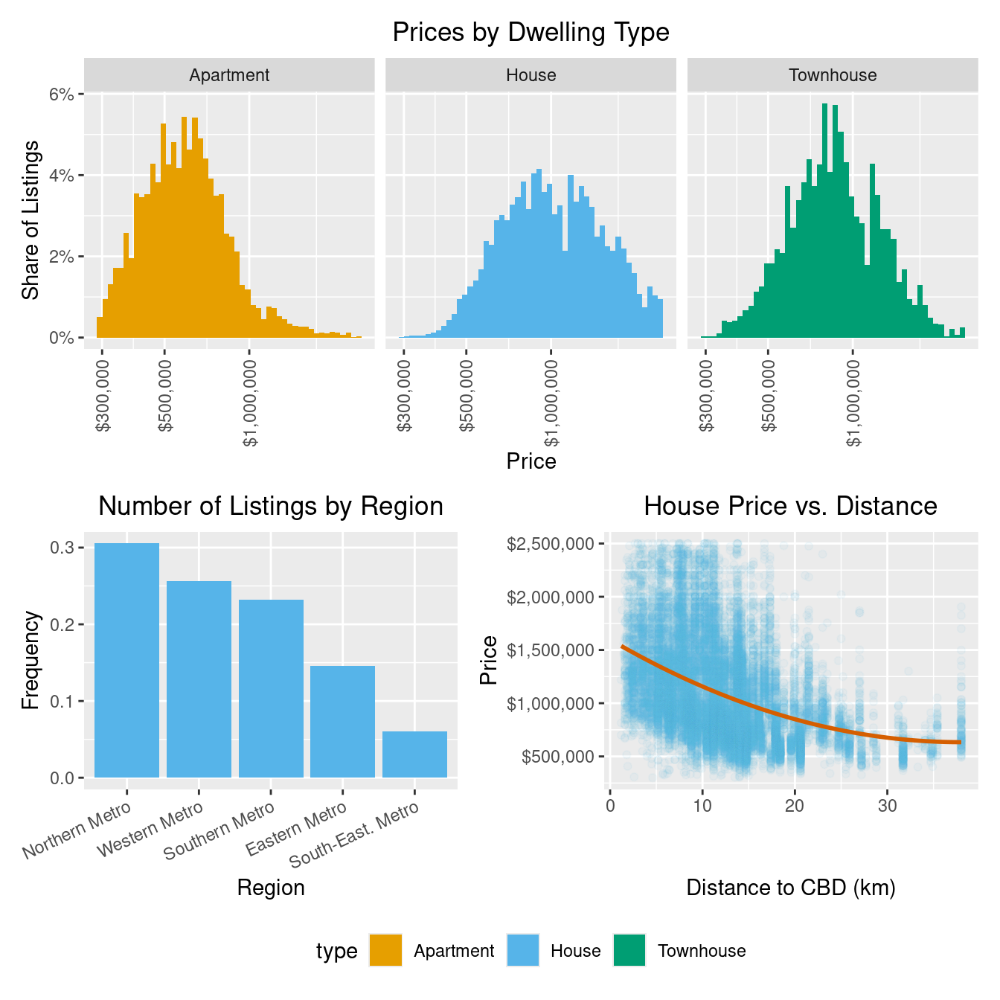
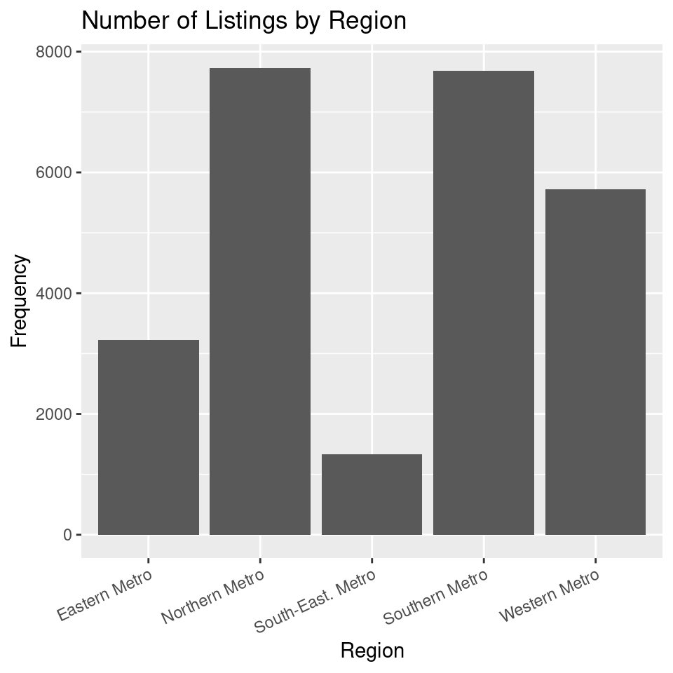

# A tibble: 10 × 6
type address postcode price distance regionname
<chr> <chr> <dbl> <dbl> <dbl> <chr>
1 House 85 Turner St 3067 1480000 2.5 Northern Metro
2 House 25 Bloomburg St 3067 1035000 2.5 Northern Metro
3 House 5 Charles St 3067 1465000 2.5 Northern Metro
4 House 40 Federation La 3067 850000 2.5 Northern Metro
5 House 55a Park St 3067 1600000 2.5 Northern Metro
6 House 129 Charles St 3067 941000 2.5 Northern Metro
7 House 124 Yarra St 3067 1876000 2.5 Northern Metro
8 House 98 Charles St 3067 1636000 2.5 Northern Metro
9 House 217 Langridge St 3067 1000000 2.5 Northern Metro
10 Townhouse 18a Mollison St 3067 745000 2.5 Northern MetroTutorial 3: Data Visualisation for Business Intelligence
Learning Goals
By the end of this tutorial, you should be able to:
- Explain how different
ggplot2visualization techniques reveal patterns in the Melbourne housing market that would be difficult to see in tables or raw numbers. - Use
ggplot2to create bar plots, histograms, and scatterplots that analyze relationships between property prices, location, and dwelling types. - Apply transformations such as log scales, proportions, and faceting to improve the interpretability of price distributions and spatial trends.
- Customize
ggplot2plots using themes, color palettes, and annotations to enhance clarity and storytelling. - Evaluate and compare visualization approaches, identifying which effectively communicate insights about housing price trends and spatial patterns.
- Build and refine a visual analysis workflow that could inform practical decision-making for home buyers, investors, or urban planners
The Business Challenge
The Topic: Understanding Melbourne’s Housing Market
Melbourne’s real estate market is one of the most dynamic in Australia. Property prices are influenced by several factors, including location, dwelling type, and proximity to the Central Business District (CBD). Buyers, sellers, and policymakers constantly analyze housing trends to make informed decisions. Understanding these trends is crucial in a $2 trillion+ housing market, where even small fluctuations in pricing expectations can have significant financial impacts.
A key question we will explore is: How do property prices vary by region, dwelling type, and location? By analyzing real estate data, we can identify patterns that help explain the drivers of Melbourne’s housing prices and their implications for different stakeholders in the market.
The Data: The Melbourne Housing Market Dataset
We will use a dataset containing real estate sales data from Melbourne. The dataset provides insights into housing trends and includes key variables that influence property prices.
The dataset captures the property location within broader metropolitan regions (regionname), allowing us to compare trends across different areas. It also includes the type of dwelling, classified as House (h), Townhouse (t), or Apartment (u), enabling us to assess price differences based on housing type. The sale price (price) provides a measure of market value, while the distance to the CBD (distance) helps analyze the impact of proximity to the city center on property prices.
Similar datasets are widely used by real estate analysts, banks, and property investors to assess housing trends, predict future movements, and guide investment decisions. Through this tutorial, we’ll work with real-world data to uncover patterns and develop a deeper understanding of Melbourne’s property market. Let’s dive in!
Where we’re headed
Just a few lines of R code transform numbers to data visualizations.
From this:
to this (REMARK Still need to complete the pretty-ing of plots)

Loading and Understanding the Data
R packages for today
library(tidyverse) # for plotting, includes ggplot
library(patchwork) # for combining multiple plots into subfigures
library(scales) # for formatting axis scales
library(ggokabeito) # color blind friendly color palette -- this course's default
library(ggthemes) # some extra styling & themes to exploreLoading the Data in R
housing <- read_csv("https://github.com/unimelb-cmce-10002/fba-book/raw/refs/heads/main/data/melbourne_housing.csv")Prepare these Exercises before Class
Prepare these exercises before coming to class. Plan to spend 90 minutes on these exercises.
Exercise 1: Plotting Number of Listings by Region
By the end of this exercise, your plot should look similar to this one:

(a). If you were a real estate investor or city planner, why would knowing the number of listings by region be valuable? What decisions could be influenced by this visualization?
(b). Use the starter code below to create a first version of the bar plot. Replace YOUR_VARIABLE_NAME with the appropriate variable name from the dataset.
What is a Bar Plot?
A bar plot is a graphical representation of categorical data, where each category is represented by a bar whose height reflects its frequency or proportion. It is commonly used to compare counts across different groups, making it easy to identify the most and least common categories in a dataset. In business and research, bar plots help visualize trends, distributions, and key differences in data at a glance.
ggplot(housing, aes(x = YOUR_VARIABLE_NAME)) +
geom_bar()(c). Extend the plot above by adding labels to the x-axis, y-axis, and title. Use the labs() function to add these labels. The code below also rotates the axis labels by 25 degrees to improve readability.
ggplot(housing, aes(x = YOUR_VARIABLE_NAME)) +
geom_bar() +
labs(x = "YOUR_X_AXIS_LABEL", y = "YOUR_Y_AXIS_LABEL", title = "YOUR_TITLE") +
theme(
axis.text.x = element_text(angle = 25, hjust = 1),
)(d). Change the color of the bars using the fill argument in geom_bar(). You can use any color you like, see (here)[https://r-graph-gallery.com/ggplot2-color.html] for a list of colors you can choose from.
ggplot(housing, aes(x = YOUR_VARIABLE_NAME)) +
geom_bar(fill = "YOUR_COLOR") +
labs(x = "YOUR_X_AXIS_LABEL", y = "YOUR_Y_AXIS_LABEL", title = "YOUR_TITLE") +
theme(
axis.text.x = element_text(angle = 25, hjust = 1),
)(e). What patterns do you notice in the number of listings? Are certain regions overrepresented or underrepresented? How might this affect housing supply and pricing?
(f). What could be improved in the visualization? Consider aspects like color, ordering of bars, labels, or additional annotations.
Exercise 2: Visualizing the distribution of Prices by Dwelling Type
By the end of this exercise, your plot should look similar to this one:

(a). Why is a histogram useful for understanding price distributions? What insights can we gain from plotting price distributions separately for each dwelling type?
What is a Histogram?
A histogram is a visualization that represents the distribution of numerical data by dividing values into bins and counting the number of observations in each bin. Unlike a bar plot, which displays categorical data, a histogram is used for continuous variables like price, age, or distance.
Histograms help identify patterns in data, such as skewness, outliers, and central tendencies, making them a crucial tool for understanding how values are distributed in a dataset.
(b). Use the starter code below to create a basic histogram of house prices. Replace YOUR_VARIABLE_NAME with the correct variable.
ggplot(housing, aes(x = YOUR_VARIABLE_NAME)) +
geom_histogram(bins = 50)(c). Extend the plot above by adding labels to the x-axis, y-axis, and title using the labs() function.
ggplot(housing, aes(x = YOUR_VARIABLE_NAME)) +
geom_histogram(bins = 50) +
labs(x = "YOUR_X_AXIS_LABEL", y = "YOUR_Y_AXIS_LABEL", title = "YOUR_TITLE")(d). Modify the x-axis so that prices are displayed in dollar format by adding scale_x_continuous(labels = scales::dollar). We have rotated the axis labels to make the numbers easier to read.
housing %>%
ggplot(aes(x = price)) +
geom_histogram(bins = 50) +
YOUR_CODE_HERE +
labs(x = "YOUR_X_AXIS_LABEL", y = "YOUR_Y_AXIS_LABEL", title = "YOUR_TITLE") +
theme(
axis.text.x = element_text(angle = 55, hjust = 1),
)(e). Add fill = type inside aes() to color the histogram by dwelling type and then create subplots by dwelling type.
housing %>%
ggplot(aes(x = price, YOUR_CODE_HERE)) +
geom_histogram(bins = 50) +
YOUR_CODE_HERE +
labs(x = "YOUR_X_AXIS_LABEL", y = "YOUR_Y_AXIS_LABEL", title = "YOUR_TITLE") +
theme(
axis.text.x = element_text(angle = 55, hjust = 1),
) +
YOUR_CODE_HERE(f). What does the histogram tell you about price differences between dwelling types?
(g). What additional improvements or customizations could enhance this visualization? How might these changes improve clarity, interpretability, or storytelling in the data?
Exercise 3: The Price - Distance Relationship
By the end of this exercise, your plot should look similar to this one:

(a). Why might we expect a relationship between price and distance to the CBD?
(b). Use the starter code below to build a scatter plot of price vs. distance, replacing YOUR_VARIABLE_NAME with the correct column names.
What is a Scatter Plot?
A scatter plot is used to visualize the relationship between two continuous variables by plotting individual data points. Each dot represents one observation, helping identify patterns, clusters, and trends. In this case, it allows us to explore how house prices change with distance.
ggplot(housing, aes(x = YOUR_VARIABLE_NAME, y = YOUR_VARIABLE_NAME)) +
geom_point()(c). Since we have a large number of data points, many overlap, making it difficult to distinguish individual observations. Modify the geom_point() function to reduce over-plotting by adjusting the alpha value. Experiment with different values (e.g., 0.1, 0.05, 0.01) and describe how each affects the visualization.
ggplot(housing, aes(x = YOUR_VARIABLE_NAME, y = YOUR_VARIABLE_NAME)) +
geom_point(alpha = YOUR_NUMBER)(d). We can better understand the relationship by adding a statistical transformation to the plot. Complete the geom_smooth() function call to overlay a straight line over the data. The se = FALSE argument removes the confidence interval around the line.
ggplot(housing, aes(x = YOUR_VARIABLE_NAME, y = YOUR_VARIABLE_NAME)) +
geom_point(alpha = YOUR_NUMBER) +
geom_smooth(method = YOUR_METHOD, formula = YOUR_FORMULA, se = FALSE)(e). Finally, add labels to the x-axis, y-axis, and title using the labs() function. You can also customize the color of the points and the line using the color argument.
ggplot(housing, aes(x = YOUR_VARIABLE_NAME, y = YOUR_VARIABLE_NAME)) +
geom_point(alpha = YOUR_NUMBER, color = "YOUR_COLOR") +
geom_smooth(method = YOUR_METHOD, formula = YOUR_FORMULA, color = "YOUR_COLOR", se = FALSE)
scale_y_continuous(YOUR_CODE) +
labs(x = "YOUR_LABEL", y = "YOUR_LABEL", title = "YOUR_TITLE")(f). What does the scatter plot reveal about the relationship between house prices and distance to the CBD? How does the line help interpret this relationship?
In-Class Exercises
You will discuss these exercises in class with your tutor and peers. These exercises build from the exercises you have prepared above, you will get the most value from the class if you have completed those above before coming to class.
Exercise 4: Improving the Listings by Region Plot
(a). Together with your peers, propose three changes you want to make to the plot in Exercise 1. Discuss the rationale behind each change and how it might improve the visualization.
(b). Work with your tutor to create an agreed upon list of changes to make to the plot. What steps do you need to take to make these improvements?
Teaching Note
Use this exercise to guide students to the following changes:
- Centered title
- Proportions on y-axes
- ordered bars
- Decide to focus on one dwelling type
(c). Implement the changes suggested in the R code below.
ggplot(housing, aes(x = YOUR_CODE)) +
geom_bar(aes(YOUR_CODE), fill = YOUR_CODE) +
labs(x = "Region", y = "Frequency", title = "Number of Listings by Region") +
theme(
axis.text.x = element_text(angle = 25, hjust = 1),
YOUR_CODE
) Solution
region_bar <-
housing %>%
filter(type == "House") %>%
ggplot(aes(x = fct_infreq(regionname))) +
geom_bar(aes(y = after_stat(count) / sum(after_stat(count))), fill = palette_okabe_ito()[2]) +
labs(x = "Region", y = "Frequency", title = "Number of Listings by Region") +
#theme_minimal() +
theme(
axis.text.x = element_text(angle = 25, hjust = 1),
plot.title = element_text(hjust = 0.5) # Center title
)
(d). (Optional, if time). Change the theme of your plot to modify its visual appearance. You can experiment with different themes from the ggplot2 or ggthemes packages.
📌 ggplot2 & ggthemes: Available Themes
| Category | Theme Name | Description |
|---|---|---|
| 🎨 Built-in Themes | theme_gray() |
Default ggplot theme (light gray background) |
theme_bw() |
Black-and-white theme | |
theme_linedraw() |
Minimalist black-and-white theme with fine lines | |
theme_light() |
Light theme with subtle gridlines | |
theme_minimal() |
Clean theme with no background color | |
theme_classic() |
Very minimalistic with axes but no grid | |
theme_void() |
Completely empty background (great for maps) | |
theme_dark() |
Dark background version of theme_light() | |
| 📰 News & Presentation | theme_economist() |
The Economist style |
theme_fivethirtyeight() |
FiveThirtyEight style | |
theme_wsj() |
Wall Street Journal style | |
theme_igray() |
Inverse gray theme (darker) | |
| 📊 Report & Journal Style | theme_tufte() |
Edward Tufte’s minimalistic approach |
theme_foundation() |
Foundation report theme | |
theme_few() |
Few’s simplified visualization style | |
theme_pander() |
Pander report theme | |
theme_hc() |
Highcharts-style theme | |
theme_solarized() |
Solarized color theme (light/dark) | |
theme_stata() |
Stata-like style | |
| 📖 Excel & Software Styles | theme_excel() |
Excel-like chart style |
theme_solid() |
A solid background for presentations |
Exercise 5: Improving the Price Distribution Plot
(a). Together with your peers, propose three changes you want to make to the plot in Exercise 2. Discuss the rationale behind each change and how it might improve the visualization.
(b). Work with your tutor to create an agreed upon list of changes to make to the plot. What steps do you need to take to make these improvements?
Teaching Note
Use this exercise to guide students to the following changes:
- Centered title
- Proportions on y-axes
- Log x axes scale to handle skewness
- Color blind sensitive palette
(c). Implement the changes suggested in the R code below.
housing %>%
ggplot(aes(x = price, YOUR_CODE_HERE)) +
# This line adds proportions by facet -- explain intuitively, not technically
geom_histogram(aes(y = after_stat(count) / tapply(after_stat(count), after_stat(PANEL), sum)[after_stat(PANEL)]),
bins = 50) +
scale_x_continuous(
YOUR_CODE_HERE
) +
scale_y_continuous(YOUR_CODE_HERE) +
labs(x = "Price", y = "YOUR_LABEL", title = "Prices by Dwelling Type") +
facet_wrap(~type) +
theme(axis.text.x = element_text(angle = 90, vjust = 0.5, hjust=1)) +
scale_fill_okabe_ito() +
theme(
plot.title = element_text(hjust = 0.5) # Center title
)Solution
price_hist <-
housing %>%
ggplot(aes(x = price, fill = type)) +
# ggplot(aes(x=price, group = type, fill = type)) +
geom_histogram(aes(y = after_stat(count) / tapply(after_stat(count), after_stat(PANEL), sum)[after_stat(PANEL)]),
bins = 50) +
# Natural log scale for x-axis with meaningful breaks
scale_x_continuous(
trans = "log",
labels = scales::dollar,
breaks = c(150e3, 500e3, 1e6, 2.5e6, 6e6)#,
#labels = scales::comma
) +
scale_y_continuous(labels = scales::percent) +
labs(x = "Price", y = "Proportion within Type", title = "Prices by Dwelling Type") +
facet_wrap(~type) +
theme(axis.text.x = element_text(angle = 90, vjust = 0.5, hjust=1)) +
scale_fill_okabe_ito() +
theme_classic() +
theme(
plot.title = element_text(hjust = 0.5) # Center title
)
Exercise 6: Improving the Price-Distance Relationship Plot
(a). Together with your peers, propose three changes you want to make to the plot in Exercise 3. Discuss the rationale behind each change and how it might improve the visualization.
(b). Work with your tutor to create an agreed upon list of changes to make to the plot. What steps do you need to take to make these improvements?
Teaching Note
Use this exercise to guide students to the following changes:
- Centered title
- Decide to focus on one dwelling type
- Color points to match the House type chosen
- Color blind sensitive palette
- Non-linear model fit
(c). Implement the changes suggested in the R code below.
housing %>%
filter(type == "House") %>%
ggplot(aes(x = distance, y = price)) +
geom_point(alpha = 0.05, , color = palette_okabe_ito()[2]) +
geom_smooth(method = "lm", formula = y ~ poly(x,2), se = FALSE, color = palette_okabe_ito()[6], linewidth = 1) +
scale_y_continuous(labels = scales::dollar) +
labs(x = "Distance to CBD (km)", y = "Price", title = "House Price vs. Distance") +
theme(
plot.title = element_text(hjust = 0.5) # Center title
) Solution
price_dist <-
housing %>%
filter(type == "House") %>%
ggplot(aes(x = distance, y = price)) +
geom_point(alpha = 0.05, , color = palette_okabe_ito()[2]) +
geom_smooth(method = "lm", formula = y ~ poly(x,2), se = FALSE, color = palette_okabe_ito()[6], linewidth = 1) +
scale_y_continuous(labels = scales::dollar) +
labs(x = "Distance to CBD", y = "Price", title = "House Price vs. Distance") +
scale_color_okabe_ito() +
theme(
plot.title = element_text(hjust = 0.5) # Center title
) Exercise 7: Putting the plots together
(a). Use the code below to combine the plots for the three exercises above. Replace PLOT_ONE, PLOT_TWO, and PLOT_THREE with the plots you created in Exercises 5, 6, and 7.
PLOT_ONE /
(PLOT_TWO | PLOT_THREE) +
plot_layout(guides = "collect") &
theme(legend.position = "bottom")(b). Save this combined plot as a PDF file using the ggsave() function. You can specify the file name and dimensions using the filename and width and height arguments.
ggsave("YOUR_FILE_NAME", width = 12, height = 8)Exercise 8: Synthesizing the Findings
If you were presenting these results in a business meeting, how would you explain the key takeaways? Structure your summary to include:
- What you analyzed (data, variables)
- What you found (key insights from the visualizations)
- What decisions could be made based on this information?